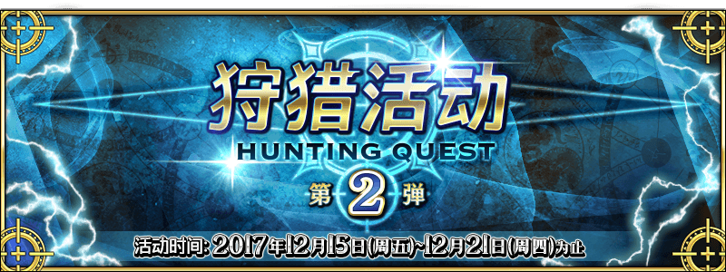

本頁面資訊僅供參考，實際情況請以遊戲內資料為準。
由於直接使用官方翻譯，可能會與其他站內翻譯相異，敬請見諒。
其他公告內容請參照日版當時公告翻譯。
- 骷髏狩獵
-
骷髏．狩獵 開位級 消耗AP 推薦Lv. 初次報酬 開放條件 30 50 312/15 14:00~12/16 16:59 ∞ 職階傾向 QP Exp 絆 
5,400 10,190 515 Wave 1 1  Lv.32 骷髏兵 HP14,274
Lv.32 骷髏兵 HP14,2742 Lv.32 骷髏兵 HP14,2743 Lv.36 骷髏兵 HP15,890Wave 2 1 Lv.38 骷髏兵 HP30,8912 Lv.35 骷髏兵 HP24,7773 Lv.35 骷髏兵 HP24,777Wave 3 1  Lv.45 骸骨之王 HP165,078
Lv.45 骸骨之王 HP165,078骷髏．狩獵 祭位級 消耗AP 推薦Lv. 初次報酬 開放條件 35 75 412/15 14:00~12/16 16:59 ∞ 職階傾向 QP Exp 絆 7,900 25,815 765 Wave 1 1 Lv.56 骷髏兵 HP20,4402 Lv.56 骷髏兵 HP20,4403 Lv.60 骷髏兵 HP21,814Wave 2 1 Lv.58 骷髏兵 HP24,8562 Lv.64 骷髏兵 HP54,6403 Lv.64 骷髏兵 HP54,640Wave 3 1 Lv.64 骷髏兵 HP81,9602 Lv.60 骸骨之王 HP256,632骷髏．狩獵 典位級 消耗AP 推薦Lv. 初次報酬 開放條件 40 90 512/15 14:00~12/16 16:59 ∞ 職階傾向 QP Exp 絆 9,400 38,190 915 Wave 1 1 Lv.66 骷髏兵 HP21,0962 Lv.70 骷髏兵 HP22,3083 Lv.70 骷髏兵 HP22,308Wave 2 1 Lv.73 骷髏兵 HP30,9962 Lv.73 骷髏兵 HP30,9963 Lv.68 骷髏兵 HP28,936Wave 3 1 Lv.73 骷髏兵 HP108,4862 Lv.69 骸骨之王 HP295,2263 Lv.73 骷髏兵 HP108,486 - 飛龍狩獵
-
飛龍．狩獵 開位級 消耗AP 推薦Lv. 初次報酬 開放條件 30 50 312/16 17:00~12/17 16:59 ∞ 職階傾向 QP Exp 絆 
5,400 10,190 515 Wave 1 1 Lv.32 雙足飛龍 HP11,9692 Lv.32 雙足飛龍 HP11,9693 Lv.25 恐懼飛龍 HP24,218Wave 2 1 Lv.28 恐懼飛龍 HP38,6612 Lv.34 雙足飛龍 HP25,3763 Lv.34 雙足飛龍 HP25,376Wave 3 1  Lv.50 風暴雙足飛龍 HP145,645
Lv.50 風暴雙足飛龍 HP145,645飛龍．狩獵 祭位級 消耗AP 推薦Lv. 初次報酬 開放條件 35 75 412/16 17:00~12/17 16:59 ∞ 職階傾向 QP Exp 絆 7,900 25,815 765 Wave 1 1 Lv.55 雙足飛龍 HP23,6882 Lv.55 雙足飛龍 HP23,6883 Lv.40 恐懼飛龍 HP33,028Wave 2 1 Lv.57 雙足飛龍 HP26,2782 Lv.44 恐懼飛龍 HP60,6013 Lv.44 恐懼飛龍 HP60,601Wave 3 1 Lv.65 風暴雙足飛龍 HP201,4092 Lv.44 恐懼飛龍 HP84,841飛龍．狩獵 典位級 消耗AP 推薦Lv. 初次報酬 開放條件 40 90 512/16 17:00~12/17 16:59 ∞ 職階傾向 QP Exp 絆 9,400 38,190 915 Wave 1 1 Lv.52 恐懼飛龍 HP25,0492 Lv.52 恐懼飛龍 HP25,0493 Lv.44 惡魔飛龍 HP34,187Wave 2 1 Lv.47 惡魔飛龍 HP60,8292 Lv.55 恐懼飛龍 HP28,7403 Lv.55 恐懼飛龍 HP28,740Wave 3 1 Lv.75 風暴雙足飛龍 HP240,6162 Lv.55 恐懼飛龍 HP98,3243 Lv.55 恐懼飛龍 HP98,324 - 魔偶狩獵
-
魔偶．狩獵 開位級 消耗AP 推薦Lv. 初次報酬 開放條件 30 50 312/17 17:00~12/18 16:59 ∞ 職階傾向 QP Exp 絆 
5,400 10,190 515 Wave 1 1  Lv.27 魔偶 HP23,761
Lv.27 魔偶 HP23,7612 Lv.29 石魔偶 HP29,6853 Lv.27 魔偶 HP23,761Wave 2 1 Lv.31 石魔偶 HP41,2722 Lv.29 魔偶 HP30,5343 Lv.29 魔偶 HP30,534Wave 3 1  Lv.39 雙子鋼鐵魔偶 HP147,106
Lv.39 雙子鋼鐵魔偶 HP147,106魔偶．狩獵 祭位級 消耗AP 推薦Lv. 初次報酬 開放條件 35 75 412/17 17:00~12/18 16:59 ∞ 職階傾向 QP Exp 絆 7,900 25,815 765 Wave 1 1 Lv.41 石魔偶 HP22,9182 Lv.41 石魔偶 HP22,9183 Lv.39 金屬魔偶 HP38,945Wave 2 1 Lv.41 金屬魔偶 HP70,3002 Lv.41 金屬魔偶 HP70,3003 Lv.46 石魔偶 HP21,893Wave 3 1 Lv.41 金屬魔偶 HP82,0172 Lv.46 雙子鋼鐵魔偶 HP208,410魔偶．狩獵 典位級 消耗AP 推薦Lv. 初次報酬 開放條件 40 90 512/17 17:00~12/18 16:59 ∞ 職階傾向 QP Exp 絆 9,400 38,190 915 Wave 1 1 Lv.45 金屬魔偶 HP22,0832 Lv.43 水晶魔偶 HP30,6333 Lv.45 金屬魔偶 HP22,083Wave 2 1 Lv.46 水晶魔偶 HP68,2292 Lv.48 金屬魔偶 HP27,3633 Lv.48 金屬魔偶 HP27,363Wave 3 1 Lv.48 金屬魔偶 HP109,4522 Lv.56 雙子鋼鐵魔偶 HP253,7663 Lv.48 金屬魔偶 HP109,452 - 噬魂獸狩獵
-
噬魂獸．狩獵 開位級 消耗AP 推薦Lv. 初次報酬 開放條件 30 50 312/18 17:00~12/19 16:59 ∞ 職階傾向 QP Exp 絆 

5,400 10,190 515 Wave 1 1  Lv.35 士兵 HP18,685
Lv.35 士兵 HP18,6852 Lv.35 士兵 HP18,6853 Lv.35 士兵 HP18,685Wave 2 1  Lv.47 星之獸 HP214,027
Lv.47 星之獸 HP214,027噬魂獸．狩獵 祭位級 消耗AP 推薦Lv. 初次報酬 開放條件 35 75 412/18 17:00~12/19 16:59 ∞ 職階傾向 QP Exp 絆 7,900 25,815 765 Wave 1 1 Lv.65 士兵 HP21,9362 Lv.65 士兵 HP21,9363 Lv.65 士兵 HP21,936Wave 2 1 Lv.63 星之獸 HP358,951噬魂獸．狩獵 典位級 消耗AP 推薦Lv. 初次報酬 開放條件 40 90 512/18 17:00~12/19 16:59 ∞ 職階傾向 QP Exp 絆 9,400 38,190 915 Wave 1 1 Lv.75 士兵 HP27,9092 Lv.75 士兵 HP27,9093 Lv.75 士兵 HP27,909Wave 2 1 Lv.68 星之獸 HP438,788 - 肅正騎士狩獵
-
肅正騎士．狩獵 開位級 消耗AP 推薦Lv. 初次報酬 開放條件 30 50 312/19 17:00~12/20 16:59 ∞ 職階傾向 QP Exp 絆 
5,400 10,190 515 Wave 1 1  Lv.23 肅正騎士 HP11,278
Lv.23 肅正騎士 HP11,2782  Lv.23 肅正騎士 HP12,159
Lv.23 肅正騎士 HP12,1593 Lv.23 肅正騎士 HP13,921Wave 2 1 Lv.25 肅正騎士 HP27,2242 Lv.25 肅正騎士 HP29,3503 Lv.25 肅正騎士 HP33,603Wave 3 1 Lv.38 肅正騎士 HP118,939肅正騎士．狩獵 祭位級 消耗AP 推薦Lv. 初次報酬 開放條件 35 75 412/19 17:00~12/20 16:59 ∞ 職階傾向 QP Exp 絆 7,900 25,815 765 Wave 1 1 Lv.28 肅正騎士 HP15,2312 Lv.28 肅正騎士 HP16,4213 Lv.28 肅正騎士 HP18,801Wave 2 1 Lv.30 肅正騎士 HP28,5452 Lv.30 肅正騎士 HP30,7753 Lv.30 肅正騎士 HP35,234Wave 3 1 Lv.30 肅正騎士 HP57,0912 Lv.52 肅正騎士 HP152,835肅正騎士．狩獵 典位級 消耗AP 推薦Lv. 初次報酬 開放條件 40 90 512/19 17:00~12/20 16:59 ∞ 職階傾向 QP Exp 絆 9,400 38,190 915 Wave 1 1 Lv.32 肅正騎士 HP17,4452 Lv.32 肅正騎士 HP18,8083 Lv.32 肅正騎士 HP21,533Wave 2 1 Lv.35 肅正騎士 HP33,3642 Lv.35 肅正騎士 HP35,9703 Lv.35 肅正騎士 HP41,182Wave 3 1 Lv.35 肅正騎士 HP38,1302 Lv.65 肅正騎士 HP153,0443 Lv.35 肅正騎士 HP41,109 - 惡魔狩獵
-
惡魔．狩獵 開位級 消耗AP 推薦Lv. 初次報酬 開放條件 30 50 312/20 17:00~12/21 13:59 ∞ 職階傾向 QP Exp 絆 
5,400 10,190 515 Wave 1 1  Lv.35 失心之人 HP34,255
Lv.35 失心之人 HP34,2552 Lv.35 失心之人 HP34,2553 Lv.35 失心之人 HP34,255Wave 2 1  Lv.37 上級惡魔 HP219,476
Lv.37 上級惡魔 HP219,476惡魔．狩獵 祭位級 消耗AP 推薦Lv. 初次報酬 開放條件 35 75 412/20 17:00~12/21 13:59 ∞ 職階傾向 QP Exp 絆 7,900 25,815 765 Wave 1 1 Lv.65 失心之人 HP36,7952 Lv.65 失心之人 HP36,7953 Lv.65 失心之人 HP36,795Wave 2 1 Lv.35 惡魔 HP102,3272 Lv.48 上級惡魔 HP309,794惡魔．狩獵 典位級 消耗AP 推薦Lv. 初次報酬 開放條件 40 90 512/20 17:00~12/21 13:59 ∞ 職階傾向 QP Exp 絆 9,400 38,190 915 Wave 1 1 Lv.75 失心之人 HP49,2452 Lv.75 失心之人 HP49,2453 Lv.75 失心之人 HP49,245Wave 2 1 Lv.40 惡魔 HP97,2792 Lv.57 上級惡魔 HP336,8583 Lv.40 惡魔 HP97,279